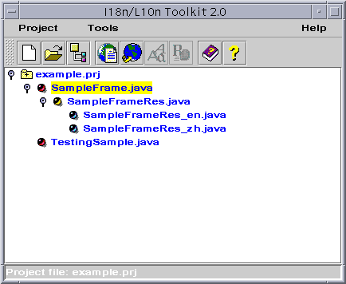

Message Tool

[contents]
Introducing Message Tool
Using the Message Tool
Message Tool Command-line
Introducing Message Tool
Message Tool can be used to automatically or interactively find and
convert non-internationalized strings in java source files, its main functions
are as follows:
-
Find out all messages(strings) used in java source files.
-
Classify the checked out messages as:
-
Converted(Finished)
-
Need to be converted(Error)
-
Need not to be converted(Frozen)
-
Define resource objects which can be instances of user-defined resource
bundle or ListResourceBundle, PropertyResourceBundle, ArrayResourceBundle.
-
Convert the messages.
For example, if Message Tool finds the Java source code:
Menu fileMenu=new Menu("File"), where "File" is non-internationalized
message,
it can convert the message to the form:
Menu fileMenu=new Menu(aBundle.getString("File"));
where aBundle is an object of MyResource class, and MyResource is a
class extends ListResourceBundle class. The object is defined in the java
source file like:
ResourceBundle aBundle= ResourceBundle.getBundle("MyResource", Locale.getDefault());
-
Export all generated resource files.
-
Includes all functions I18n Verifier can offer.
Using the Message Tool
Getting Started
with the Message Tool
You can run Message tool by typing "msgtool" in command line,
Or select to run Message Tool(figure1) from I18n/L10n Toolkit 2.0.
Then the Message Tool window will pop-up(figure2).
Figure1: Select Message Tool
Figure2: Message Tool main window
Components of Message Tool
-
The Current bundle object comboBox contains all the names
of the defined bundle variable, among which the selected one will be used
to convert current selected message item.
-
The Messages list displays all the messages checked out of the file.
Double click on any item of the list, the corresponding message in the
right Source Editor window will be selected. Click the right mouse
button, a pop up menu will show for choosing the operation on the selected
messages.
-
The Verify table displays all verified items. The detail introduction
of the displayed method of suggestion window is described in Chapter
I18n Verifier.
-
The Source Editor window displays the contents of the opened file,
you can edit it by hand or use convert functions to convert its strings
to internationalized strings. Resource bundle variables must be firstly
defined before you can convert a message.
-
Unrefreshed status: after the editor is modified by hand, the tool
will come into unrefreshed status when no messages can be selected
for automatically processing by message tool.
-
Refreshed status: originally open a file or run refresh from
unrefreshed
status, the tool will come into refreshed status.
-
The Define button is used to define bundle variables. Press Define,
the bundle variables definition dialog will pop up(figure3).
Selecting An Active Item
To specify the item for operating on:
-
Double clicked the item to be operated from the editor.
-
Double clicked the string item in the string list.
-
Select the item from the verifier table.
After select an active item, the item info will be specified in the verify
table.
Looking Up Item information
You can get all information of the items you concern from the verify
table. You can also set which kinds of item information will be shown
by Changing the parameters in Edit->options.
Defining Bundle variables
You should define the resource bundle variables before converting messages.
Do as follows:
-
Click the Define button on the toolbar.
-
Click Resources -> Resource Define.
Then the Define Bundle variables dialog will
pop-up(figure3).

Figure3: Bundle variables definition dialog
-
The tabbedpane titles(VerifierSample1 and VerifierSample) show all names
of the classes defined in the java source file, every tab shows all bundle
variables defined in the specified class.
-
The list under the Defined Bundle Variables label holds all bundle
variable names in the class, you can select a bundle variable item to show
its detail informations.
-
The Bundle name field is used to input the name of the resource
to store messages.
-
Check the Instance of User-Defined Resource Bundle checkbox to indicate
that the variable's class is a user-defined bundle.
-
Press Add button, a new bundle variable will be constructed according
to the information you input.
-
Press Update button, the information shown in GUI will be set to
the selected bundle variable.
-
Press Remove button, the selected bundle variable will be removed.
-
Press OK to confirm the input or press Cancel to give up
the input.
Defining User-defined
resource bundle
Message Tool supports user-defined resource bundle. It means that messages
in the source file can be extracted from a user-defined resource bundle
and converted automatically. But in this version of Message Tool, there
is a constraint that the user-defined resource bundle, which is able to
be recognized and processed in Message Tool, should implement the interface
com.sun.tdc.util.UserDefinedResourceBundle
and provide a method
public static UserDefinedResourceBundle getBundle() in the implementation class.
In the interface
com.sun.tdc.util.UserDefinedResourceBundle, There
are four type of extracting message methods. The following is the
summary of the methods:
| Method Summary |
| java.lang.String |
getString(java.lang.String key)
Get message
string from resource bundle by a specified key. |
| java.lang.String |
getString(java.lang.String key, java.util.Locale locale)
Get message
string from resource bundle by a specified key and specified locale. |
| java.lang.String |
getString(java.lang.String key, java.lang.String defaultValue)
Get message
string from resource bundle by a specified key. |
| java.lang.String |
getString(java.lang.String key, java.lang.String defaultValue,
java.util.Locale locale)
Get message
string from resource bundle by a specified key. |
The way of defining a user-defined resource bundle is same as Defining
Bundle variables mostly. But Instance of User-Defined Resource
Bundle checkbox should be checked. And all information in the box(see
figure 3) should be specified. The Class name is the full-quality
class name of the user-defined resource bundle. The Method type
is the type of extracting message method. There are four type of the methods
which are described in the above table. If the extracting message method
has a parameter which is a Locale object, the Locale variable
should be specified.
Operating on Messages
Converting Messages
To translate message items into internationalized form, if there is
a specified resource bundle variable, do as follows:
-
Select message -> convert
-
From the popup menu select convert.
to convert the active message item. Through the popup menu in the messages
list, you can select multiple message items for converting, but the items
must come from the same package class.
Reverting Messages
To restore the converted messages, do as follows:
-
Select message -> revert
-
From the popup menu select revert
to revert the active message item. Through the popup menu in the messages
list, you can select multiple message items for reverting.
Freezing Messages
To keep message items from being converted, do as follows:
-
Select message -> freeze
-
From the popup menu select freeze
to freeze the active message item. Through the popup menu in the messages
list, you can select multiple message items for freezing.
Unfreezing Messages
To allow the message items to be converted, do as follows:
-
Select message -> unfreeze
-
From the popup menu select unfreeze
to unfreeze the active message item. Through the popup menu in the messages
list, you can select multiple message items for unfreezing.
Converting All
To convert all unfreezed message items, select message -> convert
all.
Note: in the case multiple package classes in a same source file, if
there is not the active resource bundle variable defined in a package class,
the first bundle var will be selected for converting or new bundle var
will be defined in the action.
Reverting All
To revert all converted message items, you can select message ->
revert all.
Note: after the operation, all resource bundle variables used by the
converted message items will be undefined.
Changing converting Properties
To change convert properties (key, bundle, default value), you can select
Change
properties from the popup menu in the editor.
Figure4: Changing properties
Unifying converted messages
To change the keys of several converted message items in the same package
class to a same key.
Multi-select the messages in the messages list. Press right mouse button
and get the popup menu(figure5).
-
Press Unify and get the dialog box popup(figure12).
Figure12: Input the unified key dialog box
-
Type the value in the text field.
-
Press OK.
All instances of this key are given this message.
Exporting Resources
To exporting all resource bundle files, you can:
-
Select File->Export Resource, get the Export Resource dialog
box popup(figure7).
Figure7: Export Resource Dialog Box
-
In the above text field, input or browse the path to which you want to
export the resource files.
-
Specify the locales for which the resources will be created. Press Specify
button and get the window popup(figure8).
Figure8: Define locales to be used
-
Press Export, the resource files are exported to the directory.
Translating Resources
To run the translator tool to translate some resource bundle
file. Choose Resource-> Translate, you will get the dialog box shown
in figure6. Input the name of the file to be translated in the blank text
field or select one file by using Browse. Then press Translate,
you can access Translator function and get the Translator's main
window.
Figure6: Translate file dialog
Viewing Verify Report
To view the verifier report, select verifier -> report.
Setting Verify Policies
To set the verifier policies, select verifier -> policies.
Changing Options
Select Edit->Options, you will get the Messagetool: Options
window popup(figure9). There are two items of options: I18n Verifier
and
Editor.
-
Select I18n Verifier, you will get the window shown in figure9.
If "Show dialog for parameters when convert a message item"
is checked, a dialog will always pop up when you do converting.
-
Select Editor, see the detail introduction in Chapter2 I18n
Verifier "Editor".

Figure9: MessageTool Options_Verifier_I18N
Internationalize
a Java source file
A sample process of internationalizing a Java source file by Message
Tool is:
-
Open a Java file by selecting File->Open.
-
Choose a file and select Open, the file will be parsed automatically.
-
After the file is opened as shown in figure2, use Previous item, First
item, Next item to navigate between message strings. You can also search
for specific strings by content or location, by selecting items under the
Edit
menu:
-
Edit->Find
-
Edit->Find Next
-
Edit->Goto
-
Define bundle objects.
-
If a string ought to be protected, select Message-> Freeze.
-
If you want to accept all the entries in the suggestion window, select
Message->
Convert All, otherwise select Covert to accept individual suggestions.
Only the messages in Error status can be converted automatically.
-
Press View->Refresh to reparse the contents of the editor.
-
If you require several different messages use the same value from a resource,
select Unify from the list menu item(figure5).
-
To save a resource file, select File-> Export Resources. See the
detail introduction in Export Resources. The created resource bundles
will be automatically added to the project management window as shown in
figure13.

Figure13: Resource bundles are added automatically
-
To save the changes in the opened file, select File-> Save or Save
as.
Message Tool Command-line
The following describes the usage of Message tool command in detail.
USAGE:
java com.sun.tdc.toolkit.messagetool.MessageTool [-h|-help] [[-rn resourceName]
[-rt resourceType][-rd resourceDirectory] [-v] files|directories]
-h|-help
display this information
-rn resourceName
the resource class full package name
-rt resourceType
the resource type 0 - list resource, 1 - array resource,
2 - property resource
-rd resourceDirectory the
resource export directory
-v
display verbose information
files|directories
the java source files or directories
Top of file | Comments
| Submit Bug

Copyright © 1995-1999 Sun Microsystems, Inc.
China Technical Development Center
All Rights Reserved.